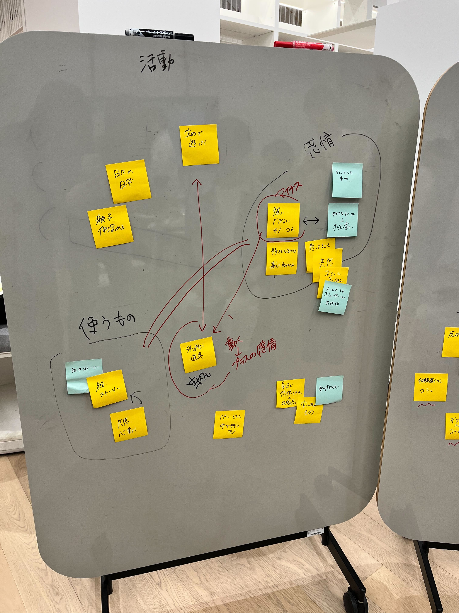
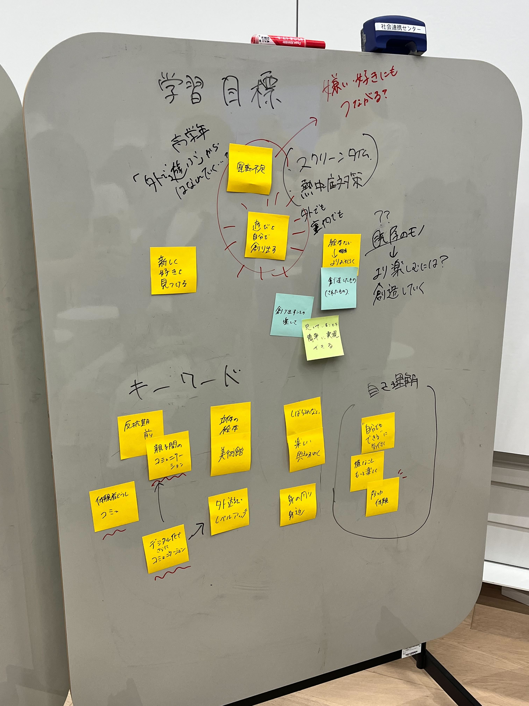
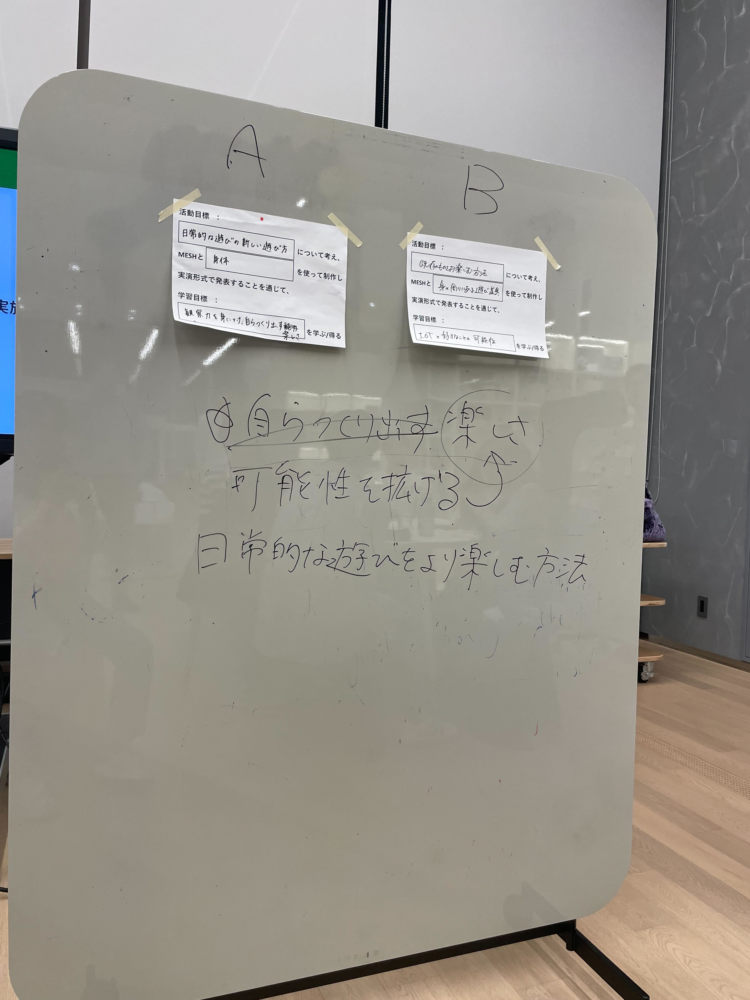

SONY×横浜市×道用ゼミプロジェクト
★WSテーマ設定
今回はWSのテーマを考えた。
テーマの大枠として、
「★★（活動目標）」について考え、MESHと「●●（使うもの）」を使って制作し、実演形式で発表することを通じて、「▲▲（学習目標）」を学ぶ/得る。
があり、前回の課題として各自が考えてきた。
2グループに分かれて、各自が考えてきたものを含め発散→収束を行った。
その後、各グループが1つテーマを提案し、どちらがいいかを検討した。
投票予定だったが、両者ともほとんど同じ内容であったため、統合する形になった。
↓
「日常的な遊びをより楽しむ方法」について考え、MESHと「●●（使うもの）」を使って制作し、
実演形式で発表することを通じて、「可能性を拡げる楽しさ」を学ぶ/得る。
ただ使うものに関しては身体なのか遊び道具なのか、両方なのか決定せず、次回に持ち越すことになった。
↓2グループの発散・収束のホワイトボード


↓最終的にどちらにするか
